| pheno measure |
hist_small |
min
max |
corr_by_age_small |
coeff
p_val |
corr_by_nviq_small |
coeff
p_val |
| abc_iii_stereotypy |
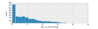 |
0.00
21.00 |
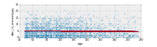 |
-2.789e-03
1.461e-01 |
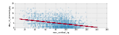 |
-5.594e-02
3.311e-75 |
| abc_ii_lethargy |
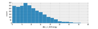 |
0.00
40.00 |
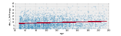 |
1.937e-02
1.149e-09 |
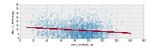 |
-4.582e-02
1.105e-18 |
| abc_i_irritability |
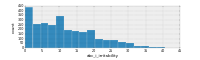 |
0.00
45.00 |
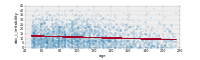 |
-2.362e-02
1.090e-09 |
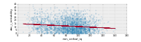 |
-4.622e-02
3.072e-13 |
| abc_iv_hyperactivity |
  |
0.00
48.00 |
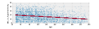 |
-6.036e-02
1.353e-39 |
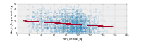 |
-6.722e-02
6.779e-19 |
| abc_v_inappropriate_speech |
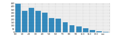 |
0.00
12.00 |
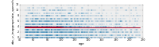 |
-8.993e-04
4.948e-01 |
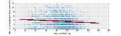 |
-1.189e-02
3.369e-08 |
| adi_r_q09_single_words |
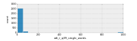 |
6.00
999.00 |
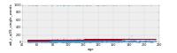 |
2.517e-01
2.511e-03 |
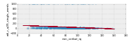 |
-9.240e-01
1.089e-11 |
| adi_r_q10_first_phrases |
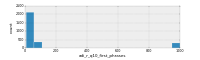 |
8.00
999.00 |
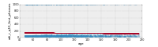 |
-1.562e-01
2.198e-01 |
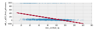 |
-4.088e+00
5.258e-92 |
| adi_r_q87_abnormality_manifest |
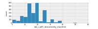 |
0.00
60.00 |
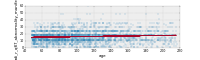 |
1.752e-02
1.016e-06 |
  |
3.341e-02
1.200e-08 |
| ados_communication |
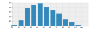 |
0.00
10.00 |
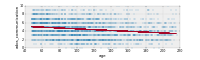 |
-9.758e-03
2.751e-26 |
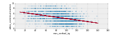 |
-2.904e-02
5.690e-87 |
| ados_reciprocal_social |
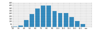 |
2.00
14.00 |
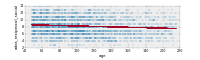 |
-6.234e-03
6.360e-08 |
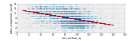 |
-4.104e-02
3.521e-114 |
| bmi |
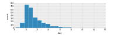 |
10.50
48.30 |
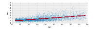 |
6.158e-02
3.809e-244 |
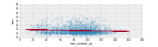 |
-1.504e-02
6.787e-06 |
| bmi_z_score |
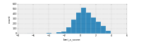 |
-6.77
5.78 |
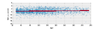 |
2.850e-03
4.118e-06 |
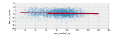 |
-3.995e-03
8.533e-05 |
| cbcl_2_5_add_adhd |
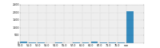 |
50.00
76.00 |
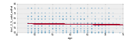 |
-4.203e-02
3.161e-01 |
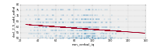 |
-5.745e-02
3.824e-06 |
| cbcl_2_5_affective_problems |
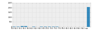 |
50.00
95.00 |
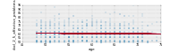 |
-2.665e-02
5.837e-01 |
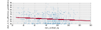 |
-5.378e-02
1.985e-04 |
| cbcl_2_5_aggressive_behavior |
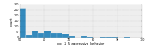 |
50.00
100.00 |
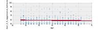 |
-5.661e-02
2.848e-01 |
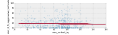 |
-1.194e-02
4.504e-01 |
| cbcl_2_5_anxiety_problems |
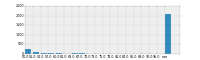 |
50.00
95.00 |
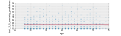 |
-8.003e-03
8.759e-01 |
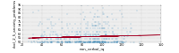 |
2.782e-02
6.887e-02 |
| cbcl_2_5_anxious_depressed |
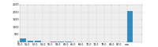 |
50.00
87.00 |
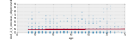 |
4.503e-02
2.319e-01 |
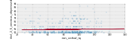 |
1.057e-02
3.480e-01 |
| cbcl_2_5_attention_problems |
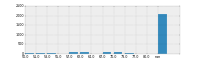 |
50.00
80.00 |
|
2.040e-02
6.466e-01 |
 |
-8.151e-02
4.848e-10 |
| cbcl_2_5_emotionally_reactive |
 |
50.00
93.00 |
|
-1.813e-02
7.201e-01 |
 |
1.358e-02
3.693e-01 |
| cbcl_2_5_oppositional_defiant |
 |
50.00
80.00 |
|
-3.562e-02
4.287e-01 |
 |
-2.084e-04
9.876e-01 |
| cbcl_2_5_pervasive_developmental |
 |
50.00
95.00 |
|
-1.074e-02
8.215e-01 |
 |
-5.910e-02
2.909e-05 |
| cbcl_2_5_sleep_problems |
 |
50.00
100.00 |
|
-9.415e-02
7.042e-02 |
 |
-3.400e-02
2.865e-02 |
| cbcl_2_5_somatic_complaints |
 |
50.00
84.00 |
|
-4.745e-02
2.449e-01 |
 |
-1.753e-03
8.856e-01 |
| cbcl_2_5_total_problems |
 |
30.00
92.00 |
|
-4.649e-02
4.127e-01 |
 |
-6.977e-02
3.487e-05 |
| cbcl_2_5_withdrawn |
 |
50.00
100.00 |
|
4.603e-03
9.283e-01 |
 |
-9.469e-02
2.856e-10 |
| cbcl_6_18_activities |
 |
0.00
65.00 |
|
3.865e-02
1.602e-11 |
 |
1.188e-01
1.614e-50 |
| cbcl_6_18_add_adhd |
 |
7.00
80.00 |
|
-2.001e-02
1.968e-05 |
 |
-1.580e-02
1.729e-02 |
| cbcl_6_18_affective_problems |
 |
6.00
89.00 |
|
1.110e-02
2.653e-02 |
 |
1.787e-02
1.146e-02 |
| cbcl_6_18_aggressive_behavior |
 |
50.00
97.00 |
|
-2.241e-02
2.264e-05 |
 |
-6.078e-04
9.353e-01 |
| cbcl_6_18_anxiety_problems |
 |
50.00
80.00 |
|
2.014e-02
7.088e-05 |
 |
2.276e-02
1.501e-03 |
| cbcl_6_18_anxious_depressed |
 |
50.00
98.00 |
|
3.018e-02
1.376e-08 |
 |
8.515e-02
1.793e-30 |
| cbcl_6_18_attention_problems |
 |
50.00
100.00 |
|
-3.658e-02
5.164e-10 |
 |
-6.940e-02
5.249e-17 |
| cbcl_6_18_conduct_problems |
 |
50.00
93.00 |
|
-2.189e-02
4.063e-07 |
 |
-1.172e-02
5.568e-02 |
| cbcl_6_18_oppositional_defiant |
 |
50.00
80.00 |
|
-1.989e-02
4.006e-05 |
 |
2.252e-02
1.011e-03 |
| cbcl_6_18_rule_breaking |
 |
50.00
84.00 |
|
-2.099e-02
4.423e-09 |
 |
4.207e-03
4.071e-01 |
| cbcl_6_18_school |
 |
0.00
99.00 |
|
1.851e-02
1.589e-04 |
 |
1.556e-01
9.408e-119 |
| cbcl_6_18_social |
 |
0.00
65.00 |
|
3.393e-03
5.302e-01 |
 |
1.150e-01
9.523e-54 |
| cbcl_6_18_social_problems |
 |
50.00
91.00 |
 |
3.742e-02
9.244e-16 |
 |
3.187e-02
1.440e-06 |
| cbcl_6_18_somatic_complaints |
 |
50.00
94.00 |
|
1.187e-02
7.225e-03 |
 |
2.217e-02
3.782e-04 |
| cbcl_6_18_somatic_prob |
 |
50.00
93.00 |
|
6.122e-03
1.677e-01 |
 |
1.072e-02
8.723e-02 |
| cbcl_6_18_thought_problems |
 |
50.00
91.00 |
|
8.482e-03
8.227e-02 |
 |
-3.057e-02
8.912e-06 |
| cbcl_6_18_total_competence |
 |
0.00
66.00 |
|
2.093e-02
1.525e-04 |
 |
1.579e-01
1.962e-93 |
| cbcl_6_18_total_problems |
 |
27.00
91.00 |
|
-7.714e-03
1.204e-01 |
 |
3.076e-03
6.612e-01 |
| cbcl_6_18_withdrawn |
 |
50.00
97.00 |
|
2.259e-02
9.294e-06 |
 |
1.418e-02
4.902e-02 |
| father_occupation_code |
 |
1.00
99.00 |
|
5.971e-03
5.545e-01 |
 |
8.414e-03
6.123e-01 |
| head_circumference |
 |
45.00
69.00 |
|
4.051e-02
0.000e+00 |
 |
-3.660e-04
8.464e-01 |
| height |
 |
90.17
201.20 |
|
4.651e-01
0.000e+00 |
 |
5.681e-03
7.160e-01 |
| height_z_score |
 |
-3.88
5.94 |
|
-9.970e-04
5.523e-02 |
 |
3.622e-03
1.946e-05 |
| mother_occupation_code |
 |
1.00
99.00 |
|
-8.736e-02
3.870e-07 |
 |
2.035e-02
4.789e-01 |
| rbs_r_iii_compulsive_behavior |
 |
0.00
24.00 |
|
-2.744e-03
1.163e-01 |
 |
-2.325e-02
3.313e-16 |
| rbs_r_ii_self_injurious |
 |
0.00
21.00 |
|
1.928e-03
1.309e-01 |
 |
-1.937e-02
1.143e-20 |
| rbs_r_i_stereotyped_behavior |
 |
0.00
18.00 |
|
-1.205e-02
5.486e-16 |
 |
-4.046e-02
3.172e-64 |
| rbs_r_iv_ritualistic_behavior |
 |
0.00
18.00 |
|
-3.816e-03
3.018e-02 |
 |
2.595e-03
3.688e-01 |
| rbs_r_vi_restricted_behavior |
 |
0.00
12.00 |
|
-6.391e-03
3.584e-07 |
 |
-1.009e-02
9.300e-07 |
| rbs_r_v_sameness_behavior |
 |
0.00
33.00 |
|
5.147e-03
5.326e-02 |
 |
-1.316e-02
2.577e-03 |
| scq_life_total |
 |
1.00
38.00 |
|
2.990e-02
2.698e-17 |
 |
-8.491e-02
2.398e-51 |
| srs_parent_awareness |
 |
1.00
24.00 |
|
-2.180e-03
1.828e-01 |
 |
-2.826e-02
2.336e-26 |
| srs_parent_cognition |
 |
1.00
34.00 |
|
7.869e-03
1.693e-03 |
 |
-5.946e-02
6.159e-49 |
| srs_parent_communication |
 |
2.00
60.00 |
|
2.236e-02
4.086e-07 |
 |
-9.171e-02
1.682e-37 |
| srs_parent_mannerisms |
 |
0.00
36.00 |
|
1.997e-02
4.790e-11 |
 |
-5.421e-02
6.677e-28 |
| srs_parent_motivation |
 |
0.00
32.00 |
|
1.787e-02
2.491e-12 |
 |
-3.408e-02
3.896e-16 |
| srs_parent_nbr_missing_items |
 |
0.00
65.00 |
|
2.085e-05
9.856e-01 |
 |
-5.234e-03
1.696e-03 |
| srs_teacher_awareness |
 |
1.00
24.00 |
|
-1.139e-02
1.352e-05 |
 |
-5.177e-02
6.485e-37 |
| srs_teacher_cognition |
 |
0.00
35.00 |
|
-2.853e-03
4.790e-01 |
 |
-8.825e-02
8.743e-46 |
| srs_teacher_communication |
 |
0.00
60.00 |
|
-7.944e-03
2.787e-01 |
 |
-1.373e-01
4.102e-33 |
| srs_teacher_mannerisms |
 |
0.00
36.00 |
|
7.331e-03
1.320e-01 |
 |
-9.109e-02
3.129e-33 |
| srs_teacher_motivation |
 |
0.00
32.00 |
|
3.729e-03
3.419e-01 |
 |
-5.475e-02
9.727e-19 |
| srs_teacher_nbr_missing_items |
 |
0.00
65.00 |
|
6.435e-02
7.885e-06 |
 |
1.140e-01
1.346e-06 |
| vabs_ii_communication |
 |
30.00
132.00 |
|
-1.120e-01
1.253e-70 |
 |
3.843e-01
0.000e+00 |
| vabs_ii_dls_standard |
 |
25.00
127.00 |
|
-6.302e-02
6.282e-25 |
 |
3.299e-01
8.626e-295 |
| vabs_ii_motor_skills |
 |
0.00
134.00 |
|
-1.611e-01
6.520e-07 |
 |
2.676e-01
1.720e-65 |
| vabs_ii_soc_standard |
 |
34.00
117.00 |
|
-8.891e-02
2.147e-59 |
 |
2.561e-01
4.412e-201 |
| weight |
 |
12.61
139.40 |
|
3.858e-01
0.000e+00 |
 |
-2.815e-02
5.112e-02 |